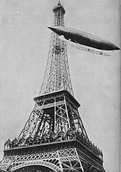
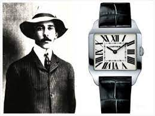
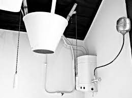

Invenções de Antônio Santos Dumont
Dirigível de Santos Dumont
Imagem de Antônio Santos Dumont contornando a Torre Eiffel em seu dirigivel n-5 em 1901.
Santos Dumont foi um dos primeiros homens a inventarem projetos para aeronaves mais refinadas. Na sua época, as principais invenções desse tipo consistiam puramente de balões de ar quente, sem dirigibilidade nem grandes inovações. Sendo assim, o dirigivel de Santos Dumont foi inovador para sua época, fazendo com que as invenções de seus contemporâneos se voltassem para projettos semelhantes a ele.
Relógio de Pulso
O modelo do relógio de Santos Dumont era desse tipo, relógio esse que é comercializado até hoje pelo nome de Cartier Santos Dumont.
Mesmo não sendo puramente o inventor do relógio de pulso, Antônio Santos Dumont foi quem mais popularizou seu uso. Pela ocupação de suas mãos no momento dos voos, Santos Dumont pediu a um amigo o desenvolvimento de um relógio que se adequasse a seu pulso de modo que ele não precisaria desocupar suas mãos.
Chuveiros de Água Quente
O chuveiro de água quente feito por Santos Dumont em 1918.
Também foi Santos Dumont o inventor dos chuveiros de água quente no Brasil. Por ter perdido uma aposta, Antônio Santos inventou tal mecanismo para que a água fosse esquentada no chuveiro.
Leonardo Matias de Carvalho Matos
IFSP-Guarulhos
Técnico em informática para internet.